Generative art is art programmed using a computer that intentionally introduces randomness as part of its creation process.
Myth One:
The artist has complete control and the code is always executed exactly as written. Therefore, generative art lacks the elements of chance, accident, discovery, and spontaneity that often makes art great, if not at least human and approachable.
Myth Two:
The artist has zero control and the autonomous machine is randomly generating the designs. The computer is making the art and the human deserves no credit, as it is not really art.
Early Examples of Generative Art
Schotter (Gravel) - George Nees ,1968
Schotter starts with a standard row of 12 squares and gradually increases the magnitude of randomness in the rotation and location of the squares as you move down the rows.
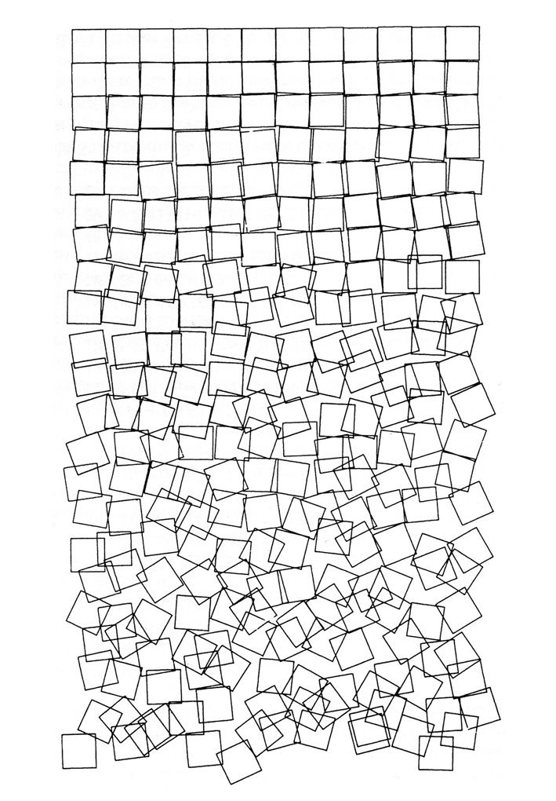
Hommage à Paul Klee - Frieder Nake, 1965
As with many innovations, there were several pioneers exploring the potential for generative art in its first few years. Frieder Nake and Michael Noll, along with Georg Nees, were all exploring the use of computers to generate art. Back then, computers typically had no monitors, and the work was shared by printing the art on plotters, large printers designed for vector graphics.
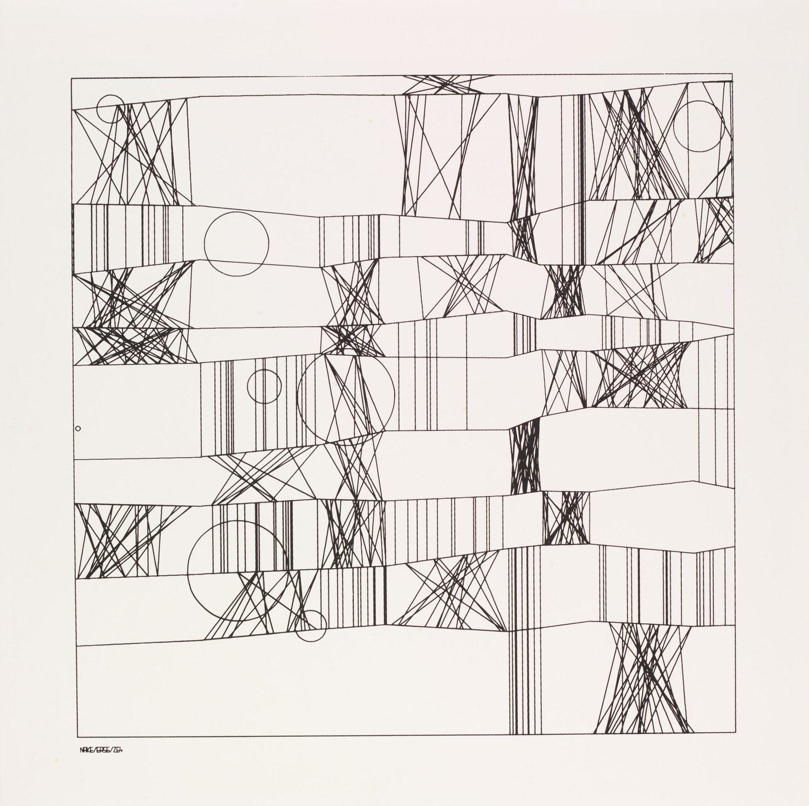
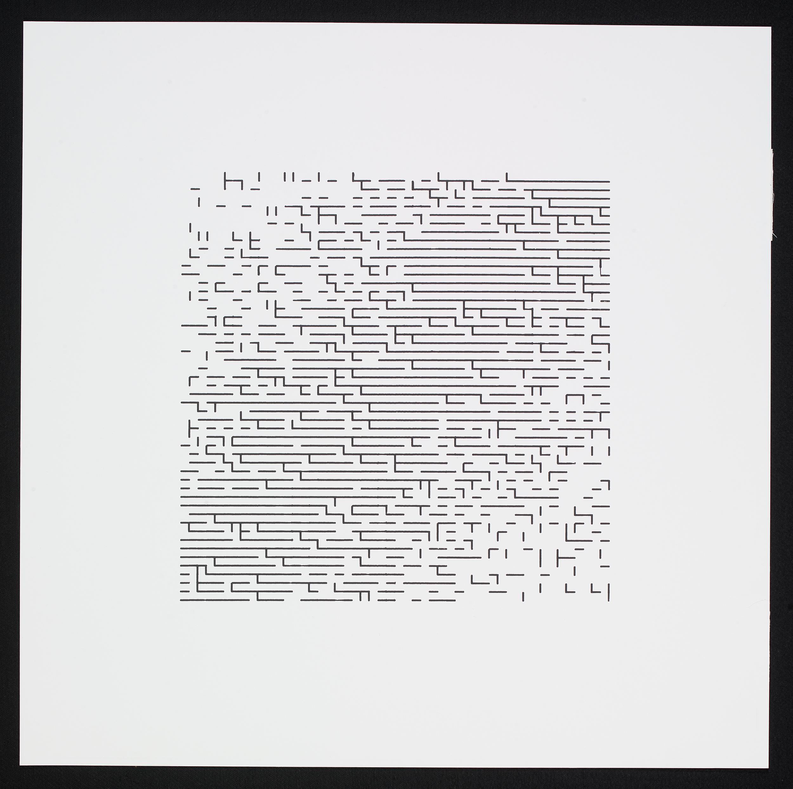
Walk Through Raster, Frieder Nake 1966 Victoria and Albert Museum online collection
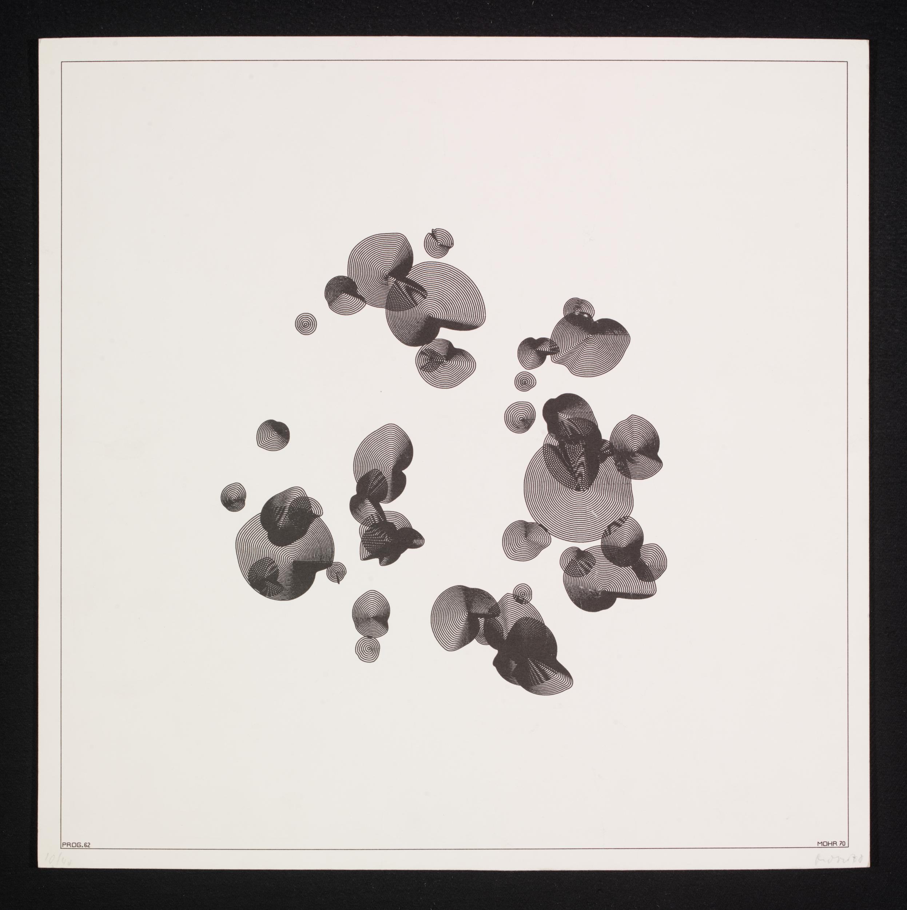
P62, Manfred Mohr 1970 Victoria and Albert Museum online collection
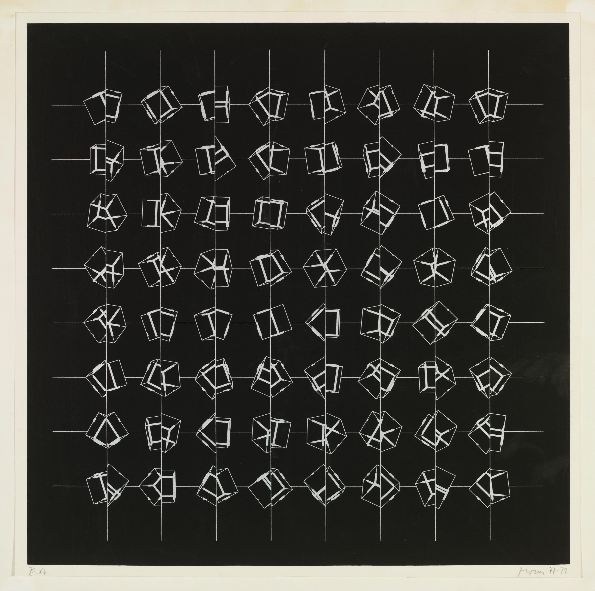
P197, Manfred Mohr 1977-79 Victoria and Albert Museum online collection
"Without the aid of a computer, it would not be possible to materialize quite so faithfully an image that previously existed only in the artist's mind. This may sound paradoxical, but the machine, which is thought to be cold and inhuman, can help to realize what is most subjective, unattainable, and profound in a human being."
Vera Molnàr
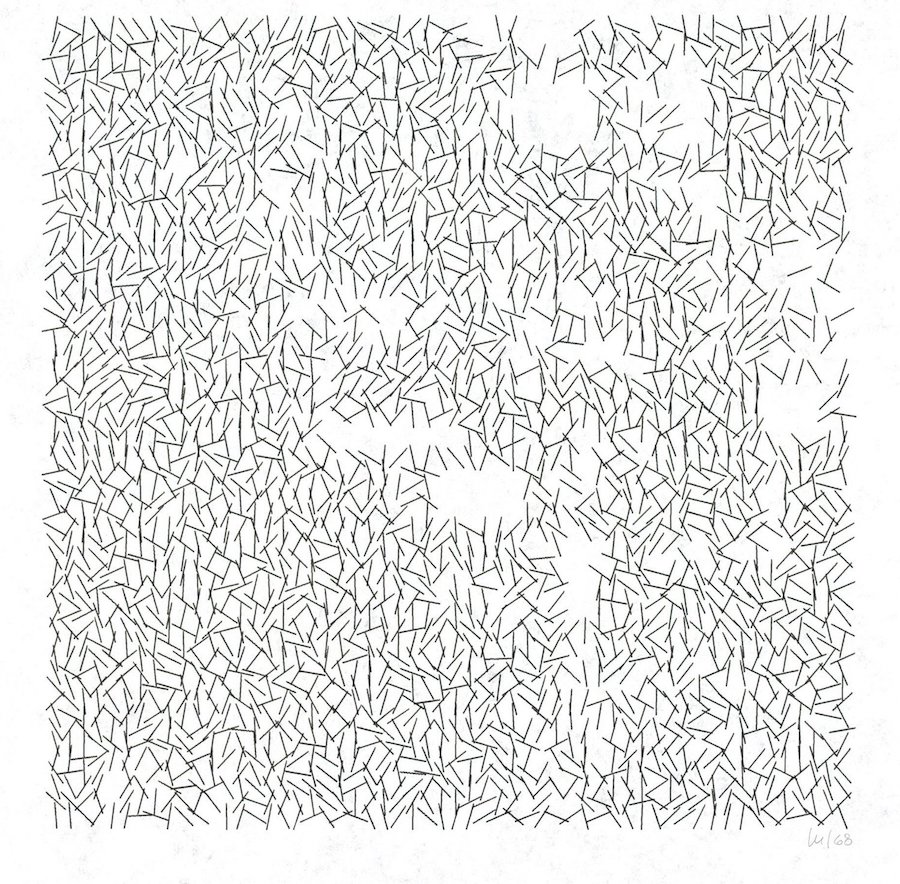
Interruptions - Vera Molnár, 1968/69
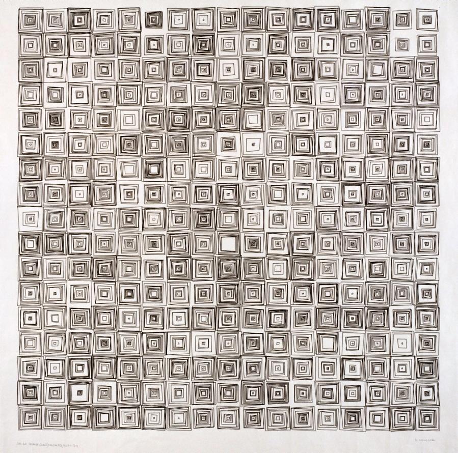
(Dés)Ordres - Vera Molnár, 1974
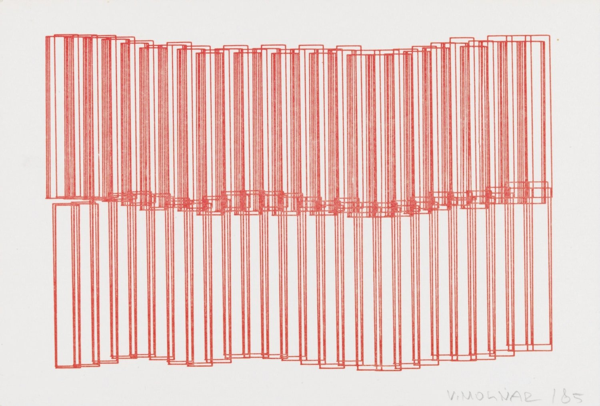
Untitled - Vera Molnár, 1985
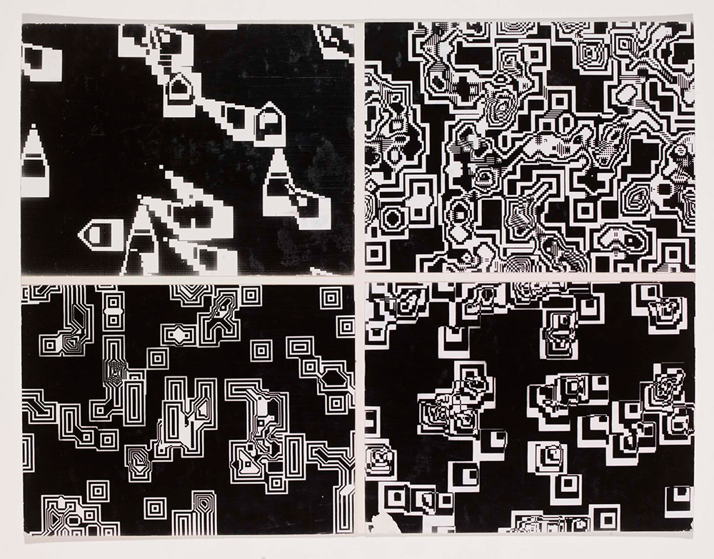
Pixillation, photographic film stills - Lillian Schwartz, 1970
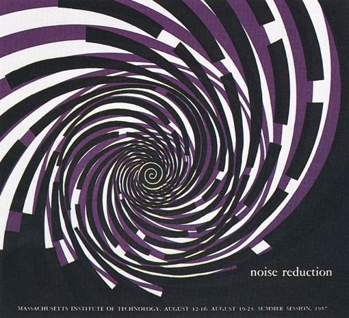
MIT summer sessions poster - Muriel Cooper, 1958
"The shift from a mechanical to an information society demands new communication processes, new visual and verbal languages, and new relationships of education, practice, and production."
Number of times the Processing software is opened on unique computers each month from 2005 to early 2018. This graph was originally published in Fry and Reas' excellent article on the history of Processing, "A Modern Prometheus."
Substrate - Jared Tarbell, 2003
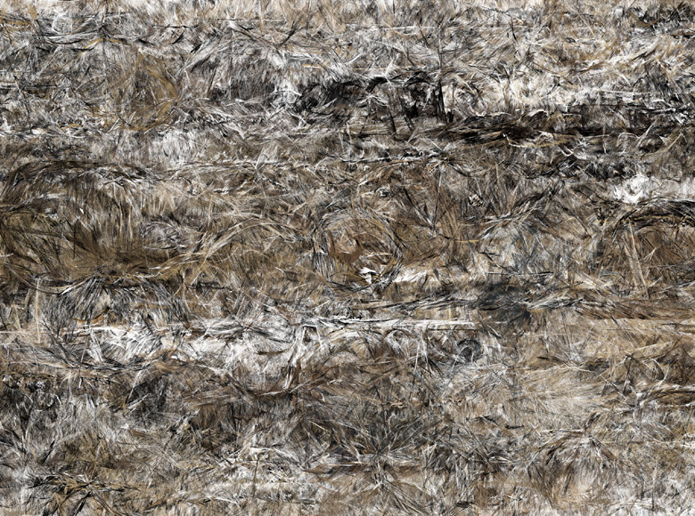
Intersection Aggregate - Jared Tarbell, 2004
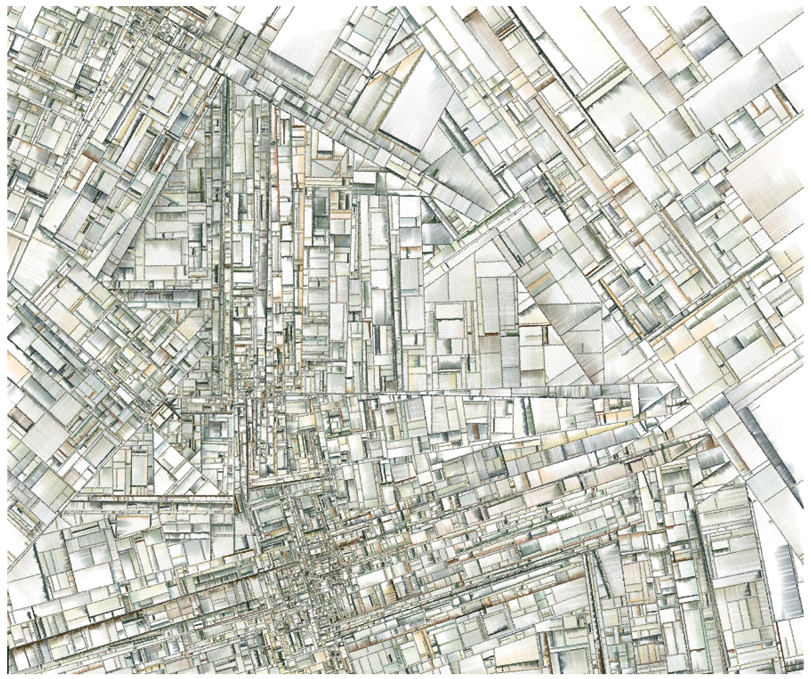
"When you write a program, it’s going to be executed the same way every single time. So if you define a system like this where things can happen at random, as the creator, you can be surprised by your own program, which is really great."